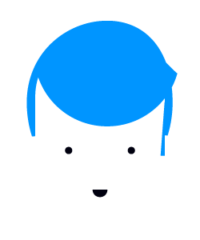

The National Day of Civic Hacking is a nation-wide event that will take place June 1-2, 2013, in major cities throughout the United States. The event will bring together average citizens, software developers, and entrepreneurs from across the nation to develop solutions to the challenges faced by our local neighborhoods, cities, states and country. They will collaboratively create, build, and invent using publicly-released data, code and technology. The National Day of Civic Hacking will provide citizens an opportunity to do what is most quintessentially American: roll up our sleeves, get involved and work together to improve our society and the place we call home.
How do I Participate?
We need 5 Hacker Teams each consisting of approximately 10 people, to sign up for the 28-hour, Civic Hack Day event.
We want to make sure this event is fail-safe so that everyone - hackers, youth problem owners and mentors, is ready to roll on June 1st and can emerge feeling successful and the event's end. In the week prior to the hackathon, each hacker team with be paired-up with a small group of youth activists, their mentors and their specific problem statement. Then, at the start of the hackathon, on the morning of June 1st, everyone can hit the ground running to make Chicago a better place to live and to learn.
The key to a Hacker Team's success will be a varied skill-set and well-defined roles for each member. Below are some of the key people we think you might want to have on your team
-
Problem Owner
This person has a problem they need help solving and some vision for a solution. They are an engaged member of the community, personally impacted by the problem they bring and a direct stakeholder in the design and outcomes of the solution.
- 
Domain Expert
This person is a recognized and respected content expert with significant and authentic experience and/or membership in the context, environment, community, governance, industry or network where the problem resides.
-
Hacker
This person is a designer, engineer, scientist, programmer, artist, technician, educator, tinkerer, carpenter, welder, tradesman, or any skills expert who can help the team create something new.
-
Mentor
This person has what it takes to guide a young person to make a meaningful contribution to the team. They have strong enough professional experience and technical ability to be a Hacker themselves, as well as strong command of the teaching pedagogy needed to structure and scaffold the experience for young people.
-

Journalist
This person is a creative content producer who will report on team accomplishments using digital and social media, [micro]blogs, or websites to tell a story about the team, their problem, and their progress towards a solution.
- 
Project Manager
This person will manage the project deliverables, coordinate team roles and responsibilities, communicate progress and expectations, and keep team members focused on task.